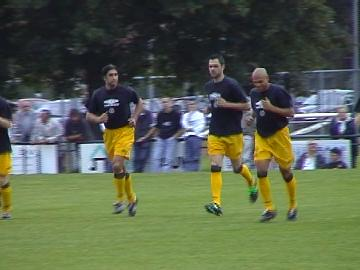

|
Roda JC - Charleroi (0-0) 16 juli 2002 |

Deze oefenwedstrijd werd gespeeld op het veld van
LHC te Eygelshoven.
Van Dijk was aanvoerder.
Sonkaya ontdekte een puntig voorwerp in de grasmat
en wierp dit als een volleerd messenwerper opzij.
Norbert verwijderd het puntig voorwerp: een haring.
In de tweede helft brak er een aardig opstootje tussen
onze jongens en de Walen uit.

De politie was meteen ter plekke.
De saaie partij eindigde in 0-0.
© Koempels
Pleasure Dome